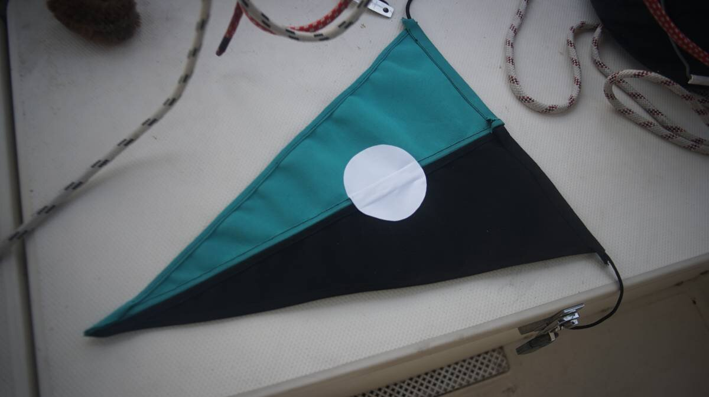

burgee project
2022.10.03
Victoria BC, Canada.

Most sailing club burgees are printed designs that will fade in the sun, on cheap fabrics that will fray in high winds. To follow the spirit of the community, we opted for materials that would last, and a design that we could repair would it become damaged.
Materials Needed:
- Aquamarine Sunbrella
- Black Sunbrella
- White Sailing Thread
- Black Sailing Thread
- White Dacron Tape
Sunbrella fabric is durable but the thread is tight, and so is very hard on a regular sewing machine(we broke about 5 needles). We used the machine for the thinner outside seems, and had to do the thicker areas by hand with a stitching awl. We also had to hand-stitch the white circles after sticking the dacron tape circles.
Because we had to make a seam down the center of the two halves, this burgee may fly a little stiff, but at least it'll last. We ran a line of paracord on the inside of the burgee and made a pocket to hold it in, we'll use this line to tie the burgee to Pino. Burgees usually use grommets, but we think that a rope will be more durable.
- Width: 55cm
- Height: 36cm
- White Circle Radius: 9cm
- White Circle Distance From Height: 13cm
We visited Jeunes Brothers in Victoria and purchased some aquamarine and black Sunbrella off-cuts, and some black and white UV resistant thread. For the white circle, we used some sail repair material we already had on hand.